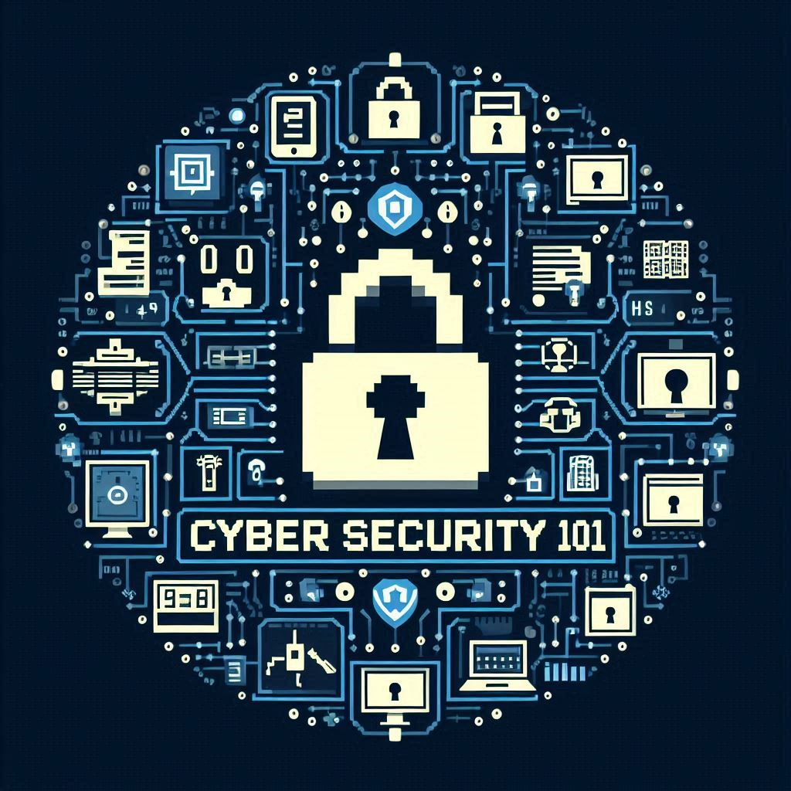

Introduction to Cyber Security
Cybersecurity, also known as information technology security, focuses on protecting computers, networks, programs, and data from unintended or unauthorized access, change, or destruction. It involves implementing measures to prevent cyber threats, which can range from threats to data security to the disruption of entire networks. In the digital age, cybersecurity is crucial because of the sheer volume of data that resides on the internet. This data, which ranges from personal information to critical national intelligence, is a tempting target for attackers. Cyberattacks can come from individual hackers, organized criminal groups, or even state actors. The field of cybersecurity is vast and encompasses several types of security. Network security aims to protect the integrity of networks from attackers. Application security focuses on keeping software and devices free of threats. Information security protects the integrity and privacy of data, both in storage and in transit. The consequences of a successful cyberattack can be devastating. For individuals, this could mean identity theft or loss of critical personal data. For organizations, an attack could result in significant financial losses, disruption of operations, loss of customer trust, and regulatory fines. To protect against these threats, cybersecurity strategies involve risk management, data loss prevention, end-user education, and the implementation of defensive measures such as firewalls and encryption.